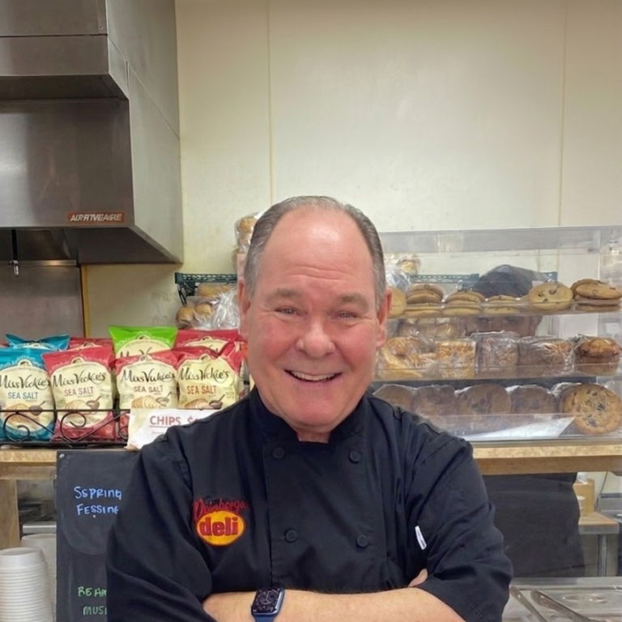

Readers’ Choice: Deli
Living Magazine ↗Northeast Tarrant County readers’ choice winner in the deli category.
A FAMILY DELI / SINCE 1952
The Weinberger family’s deli story began in the Chicago area in 1952. Dan opened the Grapevine deli in 2002.
The sandwiches carry that history forward: Italian beef, Reubens, Chicago dogs, and a long list of originals.
Find your sandwich ↗ Watch the deli filmFROM THE DELI
Watch Weinberger’s own film: Italian beef, Chicago roots, and the deli on Main Street.
Find your Italian beef ↗
TOM’S DELIS TO MAIN STREET
In 1952, Tom Weinberger opened a small shop in Homewood, Illinois. Listening to his customers and learning at Ray Markon’s Seaway deli helped turn it into a deli of his own. Tom’s Delis eventually grew to five shops across Chicagoland.
Dan grew up working weekends and summers in those delis. Later, he studied cooking and sandwiches from coast to coast: the bread, the cheeses, the sauces, the way a sandwich is built and served.
That experience came to Grapevine in 2002. The menu keeps moving, with a spring contest helping decide which sandwiches earn their place.
Read Dan’s full story ↗DAN, IN HIS OWN WORDS
“All Chefs have passion for some part of the Culinary experience. Mine just happens to be the sandwich.”Dan Weinberger · Read the full account (PDF) ↗
Pick a favorite or work with the sandwich maker to build your own. If something isn’t right, tell the team what would make it right. That’s part of Dan’s welcome.
Build your sandwich ↗AWARDS & RECOGNITION
“The Best Chicago Deli in Texas”
Northeast Tarrant County readers’ choice winner in the deli category.
Selected as Best Deli in D Magazine’s 2024 Best of Big D.
Inducted September 29, 2023. Weinberger’s became the 148th recipient of Vienna Beef’s Hall of Fame honor.
Weinberger’s represented Texas in the publication’s September 5, 2023 state-by-state deli selection.
In its 2023 Hall of Fame announcement, Vienna Beef credited Weinberger’s with more than 20 foodservice awards, including Best of Grapevine, People’s Choice, and Best of Texas honors. The selections above link to the organizations and publications behind them.
THE NEXT SANDWICH IS YOURS
601 S Main Street · Grapevine, Texas